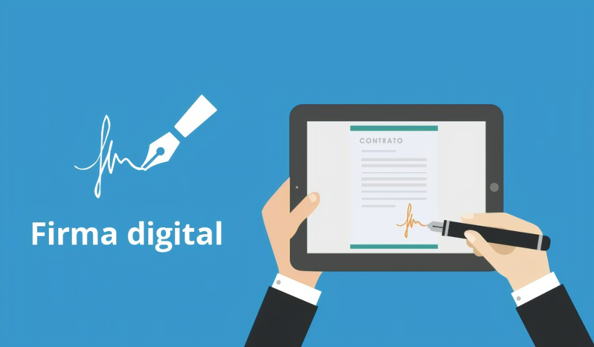

La firma electrónica es un concepto fundamental en el mundo digital. Aunque no involucra una pluma y papel, su importancia es igual de relevante.
La firma electrónica no es una rúbrica tradicional, sino más bien un conjunto de datos en formato electrónico. Estos datos están asociados a un documento electrónico y demuestran la aceptación o aprobación del firmante. Imagina que es como estampar tu sello digital en un contrato o un formulario en línea.
Según el Reglamento (UE) No 910/2014 (conocido como eIDAS), la firma electrónica son los datos electrónicos vinculados a otros datos o lógicamente asociados con ellos.
Estos datos son utilizados por el firmante para autenticar su identidad y validar su consentimiento.
